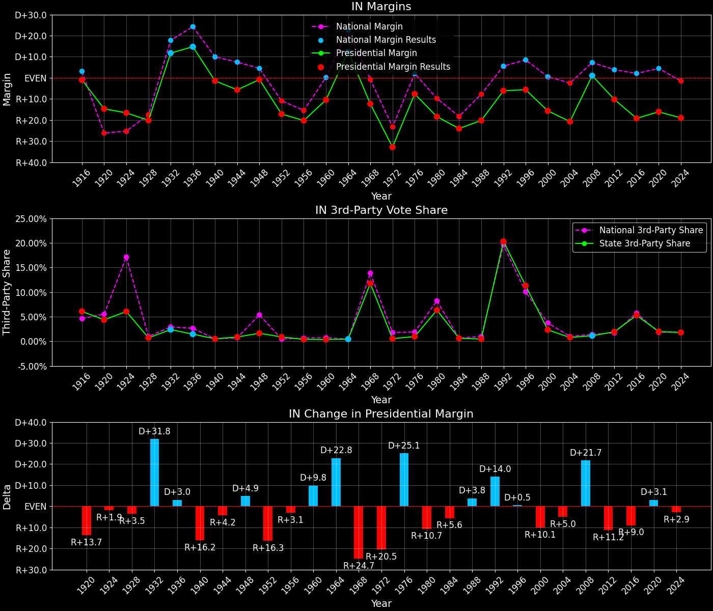
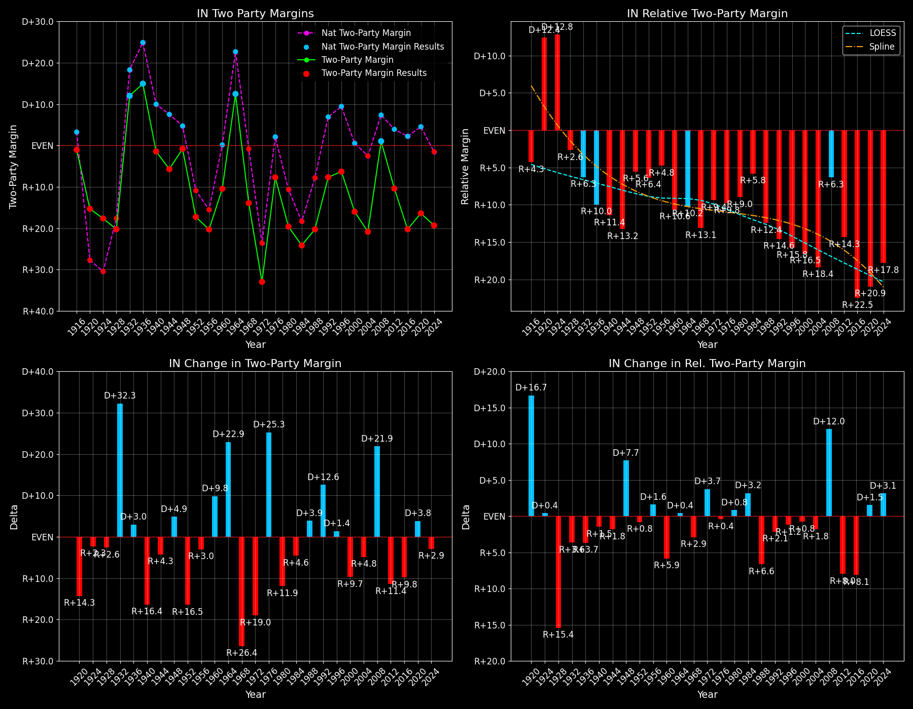

Indiana (IN) — Statewide

Margins · 3rd-Party share · Pres. deltas

Relative margins · Relative 3rd-Party · Rel. deltas
Indiana (IN) — Total Data
| Year | EVs | D | R | State Margin | Nat. Margin | Rel. Margin | Total votes |
|---|---|---|---|---|---|---|---|
| 1968 | 13 | 806,659(38.1%) | 1,067,885(50.4%) | R+12.3 | R+0.6 | R+11.8 | 2,117,652 |
| 1972 | 13 | 708,838(33.5%) | 1,406,397(66.5%) | R+33.0(Δ R+20.6) | R+23.5(Δ R+23.0) | R+9.4(Δ D+2.3) | 2,115,235 |
| 1976 | 13 | 1,008,576(46.3%) | 1,169,019(53.7%) | R+7.4(Δ D+25.6) | D+2.2(Δ D+25.7) | R+9.6(Δ R+0.1) | 2,177,595 |
| 1980 | 13 | 862,635(37.9%) | 1,300,321(57.1%) | R+19.2(Δ R+11.8) | R+9.9(Δ R+12.1) | R+9.3(Δ D+0.3) | 2,278,511 |
| 1984 | 12 | 841,481(37.9%) | 1,377,230(62.1%) | R+24.1(Δ R+4.9) | R+18.1(Δ R+8.2) | R+6.0(Δ D+3.3) | 2,218,711 |
| 1988 | 12 | 860,780(39.9%) | 1,297,838(60.1%) | R+20.2(Δ D+3.9) | R+7.7(Δ D+10.4) | R+12.5(Δ R+6.5) | 2,158,618 |
| 1992 | 12 | 848,420(37.0%) | 989,375(43.1%) | R+6.1(Δ D+14.1) | D+5.6(Δ D+13.3) | R+11.7(Δ D+0.8) | 2,293,729 |
| 1996 | 12 | 887,454(41.9%) | 1,006,632(47.5%) | R+5.6(Δ D+0.5) | D+8.6(Δ D+3.0) | R+14.2(Δ R+2.4) | 2,118,366 |
| 2000 | 12 | 901,980(41.4%) | 1,245,836(57.1%) | R+15.8(Δ R+10.1) | D+0.5(Δ R+8.0) | R+16.3(Δ R+2.1) | 2,180,348 |
| 2004 | 11 | 969,009(39.4%) | 1,479,438(60.1%) | R+20.7(Δ R+5.0) | R+2.5(Δ R+3.0) | R+18.3(Δ R+2.0) | 2,462,238 |
| 2008 | 11 | 1,374,039(50.0%) | 1,345,648(49.0%) | D+1.0(Δ D+21.8) | D+7.3(Δ D+9.7) | R+6.2(Δ D+12.0) | 2,748,945 |
| 2012 | 11 | 1,152,888(43.9%) | 1,420,542(54.1%) | R+10.2(Δ R+11.2) | D+3.9(Δ R+3.4) | R+14.1(Δ R+7.8) | 2,623,541 |
| 2016 | 11 | 1,033,088(37.9%) | 1,557,206(57.2%) | R+19.2(Δ R+9.0) | D+2.1(Δ R+1.8) | R+21.3(Δ R+7.3) | 2,724,283 |
| 2020 | 11 | 1,242,401(41.0%) | 1,729,509(57.0%) | R+16.1(Δ D+3.2) | D+4.4(Δ D+2.3) | R+20.5(Δ D+0.8) | 3,033,439 |
| 2024 | 11 | 1,163,603(39.6%) | 1,720,347(58.6%) | R+19.0(Δ R+2.9) | R+1.5(Δ R+6.0) | R+17.4(Δ D+3.1) | 2,936,677 |
Column explanations
- Δ
- Change (delta) in the value from the previous election year.
- Year
- Election year.
- EVs
- Number of electoral votes allocated to this state or unit.
- D
- Number of votes for the Democratic candidate (raw count(pct%)).
- R
- Number of votes for the Republican candidate (raw count(pct%)).
- State Margin
- Margin between the two major-party candidates, including third-party votes ((D - R)/total).
- Nat. Margin
- The national presidential margin for that year, including third-party votes ((D_total - R_total)/total_votes).
- Rel. Margin
- The presidential margin relative to the national presidential margin (Margin - Nat. Margin).
- Total votes
- Total voter turnout or ballots cast (when provided).
Indiana (IN) — Third-Party Data
| Year | D | R | Other votes | State 3rd-Party Share | 3rd-Party Nat. Share | 3rd-Party Rel. Share |
|---|---|---|---|---|---|---|
| 1968 | 806,659(38.1%) | 1,067,885(50.4%) | 243,108(11.5%) | 11.48% | 13.59% | -2.11% |
| 1972 | 708,838(33.5%) | 1,406,397(66.5%) | 0(0.0%) | 0.00% | 0.09% | -0.09% |
| 1976 | 1,008,576(46.3%) | 1,169,019(53.7%) | 0(0.0%) | 0.00% | 0.33% | -0.33% |
| 1980 | 862,635(37.9%) | 1,300,321(57.1%) | 115,555(5.1%) | 5.07% | 6.98% | -1.90% |
| 1984 | 841,481(37.9%) | 1,377,230(62.1%) | 0(0.0%) | 0.00% | 0.12% | -0.12% |
| 1988 | 860,780(39.9%) | 1,297,838(60.1%) | 0(0.0%) | 0.00% | 0.21% | -0.21% |
| 1992 | 848,420(37.0%) | 989,375(43.1%) | 455,934(19.9%) | 19.88% | 19.23% | 0.65% |
| 1996 | 887,454(41.9%) | 1,006,632(47.5%) | 224,280(10.6%) | 10.59% | 9.68% | 0.91% |
| 2000 | 901,980(41.4%) | 1,245,836(57.1%) | 32,532(1.5%) | 1.49% | 3.65% | -2.16% |
| 2004 | 969,009(39.4%) | 1,479,438(60.1%) | 13,791(0.6%) | 0.56% | 0.84% | -0.28% |
| 2008 | 1,374,039(50.0%) | 1,345,648(49.0%) | 29,258(1.1%) | 1.06% | 1.38% | -0.31% |
| 2012 | 1,152,888(43.9%) | 1,420,542(54.1%) | 50,111(1.9%) | 1.91% | 1.62% | 0.29% |
| 2016 | 1,033,088(37.9%) | 1,557,206(57.2%) | 133,989(4.9%) | 4.92% | 5.54% | -0.62% |
| 2020 | 1,242,401(41.0%) | 1,729,509(57.0%) | 61,529(2.0%) | 2.03% | 1.84% | 0.19% |
| 2024 | 1,163,603(39.6%) | 1,720,347(58.6%) | 52,727(1.8%) | 1.80% | 1.88% | -0.09% |
Column explanations
- Year
- Election year.
- D
- Number of votes for the Democratic candidate (raw count(pct%)).
- R
- Number of votes for the Republican candidate (raw count(pct%)).
- Other votes
- Number of votes for third-party (other) candidates (raw count(pct%)).
- State 3rd-Party Share
- Share of the vote received by third-party (other) candidates.
- 3rd-Party Nat. Share
- The national third-party share for that year (3rd-Party votes / total votes).
- 3rd-Party Rel. Share
- Third-party share relative to the national third-party share (3rd-Party share - Nat. 3rd-Party share).

Two-party margins · relative · deltas
Indiana (IN) — Two-Party Data
| Year | EVs | D | R | 2-Party Margin | 2-Party Nat. Margin | 2-Party Rel. Margin |
|---|---|---|---|---|---|---|
| 1968 | 13 | 806,659(43.0%) | 1,067,885(57.0%) | R+13.9 | R+0.7 | R+13.3 |
| 1972 | 13 | 708,838(33.5%) | 1,406,397(66.5%) | R+33.0(Δ R+19.0) | R+23.6(Δ R+22.9) | R+9.4(Δ D+3.8) |
| 1976 | 13 | 1,008,576(46.3%) | 1,169,019(53.7%) | R+7.4(Δ D+25.6) | D+2.2(Δ D+25.8) | R+9.6(Δ R+0.2) |
| 1980 | 13 | 862,635(39.9%) | 1,300,321(60.1%) | R+20.2(Δ R+12.9) | R+10.6(Δ R+12.8) | R+9.6(Δ R+0.0) |
| 1984 | 12 | 841,481(37.9%) | 1,377,230(62.1%) | R+24.1(Δ R+3.9) | R+18.1(Δ R+7.5) | R+6.0(Δ D+3.6) |
| 1988 | 12 | 860,780(39.9%) | 1,297,838(60.1%) | R+20.2(Δ D+3.9) | R+7.8(Δ D+10.4) | R+12.5(Δ R+6.5) |
| 1992 | 12 | 848,420(46.2%) | 989,375(53.8%) | R+7.7(Δ D+12.6) | D+6.9(Δ D+14.7) | R+14.6(Δ R+2.1) |
| 1996 | 12 | 887,454(46.9%) | 1,006,632(53.1%) | R+6.3(Δ D+1.4) | D+9.5(Δ D+2.6) | R+15.8(Δ R+1.2) |
| 2000 | 12 | 901,980(42.0%) | 1,245,836(58.0%) | R+16.0(Δ R+9.7) | D+0.5(Δ R+8.9) | R+16.5(Δ R+0.8) |
| 2004 | 11 | 969,009(39.6%) | 1,479,438(60.4%) | R+20.8(Δ R+4.8) | R+2.5(Δ R+3.0) | R+18.4(Δ R+1.8) |
| 2008 | 11 | 1,374,039(50.5%) | 1,345,648(49.5%) | D+1.0(Δ D+21.9) | D+7.4(Δ D+9.8) | R+6.3(Δ D+12.0) |
| 2012 | 11 | 1,152,888(44.8%) | 1,420,542(55.2%) | R+10.4(Δ R+11.4) | D+3.9(Δ R+3.4) | R+14.3(Δ R+8.0) |
| 2016 | 11 | 1,033,088(39.9%) | 1,557,206(60.1%) | R+20.2(Δ R+9.8) | D+2.2(Δ R+1.7) | R+22.5(Δ R+8.1) |
| 2020 | 11 | 1,242,401(41.8%) | 1,729,509(58.2%) | R+16.4(Δ D+3.8) | D+4.5(Δ D+2.3) | R+20.9(Δ D+1.5) |
| 2024 | 11 | 1,163,603(40.3%) | 1,720,347(59.7%) | R+19.3(Δ R+2.9) | R+1.6(Δ R+6.1) | R+17.7(Δ D+3.2) |
Column explanations
- Δ
- Change (delta) in the value from the previous election year.
- Year
- Election year.
- EVs
- Number of electoral votes allocated to this state or unit.
- D
- Number of votes for the Democratic candidate (raw count(pct%)).
- R
- Number of votes for the Republican candidate (raw count(pct%)).
- 2-Party Margin
- Margin between the two major-party candidates, ignoring third-party votes ((D - R)/(D + R)).
- 2-Party Nat. Margin
- The national presidential margin for that year, including third-party votes ((D_total - R_total)/total_votes).
- 2-Party Rel. Margin
- The presidential margin relative to the national presidential margin (Margin - Nat. Margin).